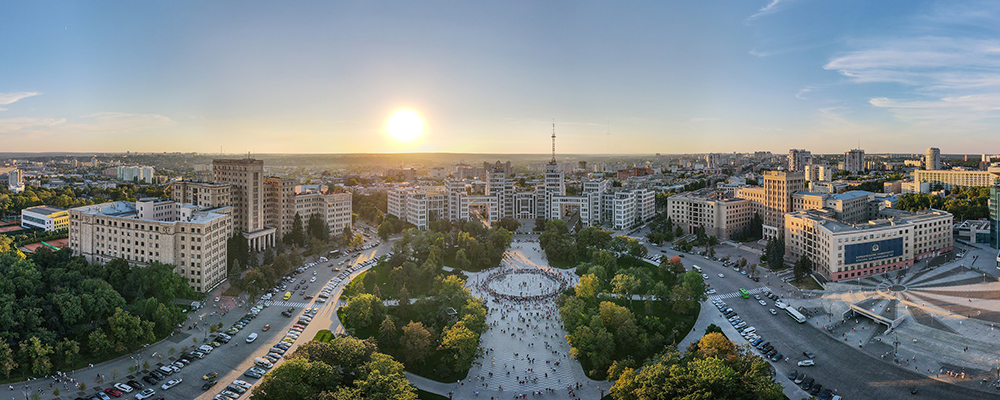
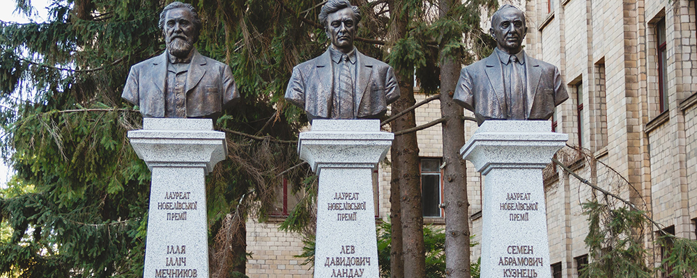
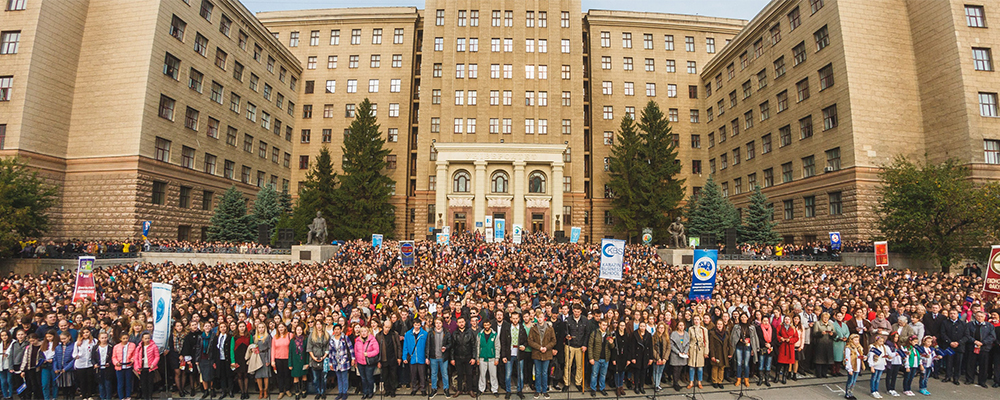
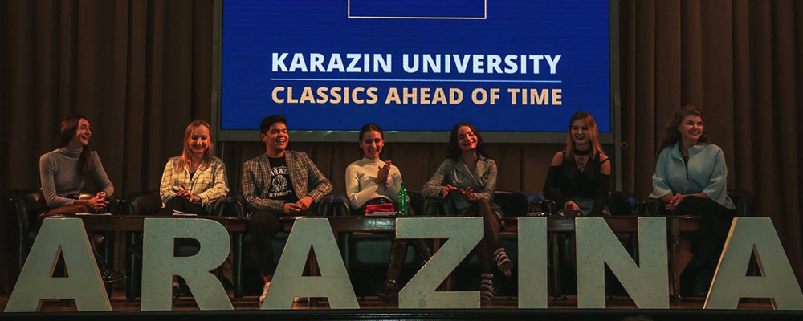
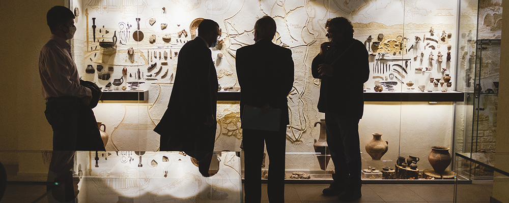

Why choose Karazinsky?

For more than two centuries of its existence, Karazin University made a significant contribution to the development of Ukrainian society, gave a strong impetus to the transformation of Kharkiv into a powerful scientific and cultural center, the educational capital of Ukraine. Currently, the university rightfully occupies the highest ranks of all-Ukrainian rankings among classical universities and is well known far beyond the borders of Ukraine.
The names of such world-famous scientists, scientists and educators as Petro Gulak-Artemovskyi, Mykola Kostomarov, Oleksandr Lyapunov, Oleksandr Potebnia, Mykola Beketov, Dmytro Bagaliy, Mykola Barabashov, Oles Gonchar, Oleksii Pogorelov and many others are associated with the Karazin University.

Kharkiv University is the only one in Ukraine where three Nobel laureates studied and worked: biologist Ilya Mechnikov, economist Semen Kuznets, and physicist Lev Landau.
The names of the students of the university are immortalized in geographical names, names of space objects, plants and minerals, laws and formulas. More than 65 university graduates became full members and corresponding members of the National Academy of Sciences of Ukraine.

All these years Karazin University changed and adopted the best world experience. It is the only Ukrainian institution of higher education that, according to the results of the QS World University ranking, entered the top 500 universities in the world. Today, more than 20,000 students and trainees study at the university. And if you are going to join their number, you will definitely not regret it. After all, Karazin University is a classical education combined with innovative teaching methods. It's a timeless classic. University students have the opportunity to participate in international programs student exchange and study in EU countries, double degree programs with leading EU universities in France, Poland, Italy, Germany and Slovakia, etc. The university cooperates with leading employers, in particular, students can intern in Ukrainian and international companies, such as: NIX Solutions, SoftServe and others. We don't just offer quality education, within the walls of our university you can immerse yourself in a democratic atmosphere of scientific and cultural enthusiasm.

In Karazinsky, student self-government is developed, which not only protects the rights of students, but also affects the development of the university, provides students with interesting leisure time. In addition, Karazin residents have the opportunity to participate in a wide variety of creative and sports activities, to test their organizational and leadership qualities.
Of course, not only prospects, but also learning conditions play a big role in choosing an educational institution. Karazinsky can offer students accommodation in a modern student campus, visits to university cultural and scientific centers, museums, in particular the University History Museum, the Museum of Nature, the Museum of Archeology, the Museum of Astronomy, as well as a botanical garden, sports facilities, a powerful library, a modern co-working space, etc.

By choosing Karazin University, you are choosing the future. After all, all our steps are aimed at staying ahead of all the challenges of today.